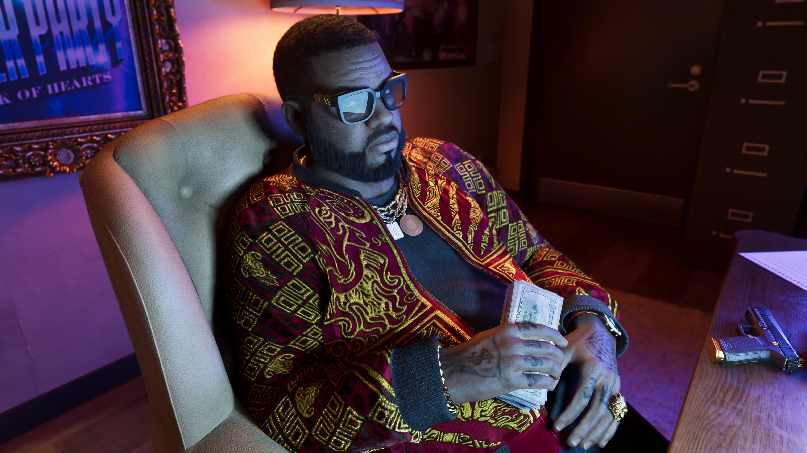
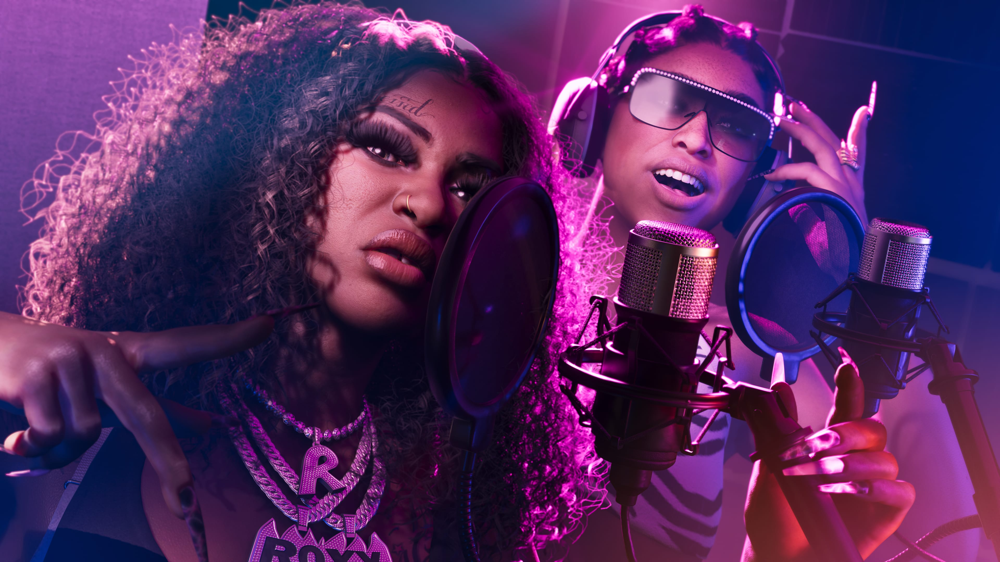

Personagens de Leonida

Boobie Ike
"É tudo questão de coração – do Jack of Hearts."
Boobie é uma lenda local de Vice City – e age como tal. Ele foi um dos poucos a transformar sua história nas ruas em um império legítimo, que engloba o mercado imobiliário, uma boate de striptease e um estúdio de gravação. Boobie é puro sorriso, exceto na hora de discutir negócios.

Dre'Quan Priest
"Only Raw... Records"
Dre'Quan sempre foi mais malandro do que gângster. Mesmo quando traficava nas ruas para pagar as contas, fazer sucesso na música era o objetivo dele.

Real Dimez
"A grana toda nessa parada. Olha minha gêmea, visão dobrada."
Bae-Luxe e Roxy, vulgo Real Dimez, são amigas desde o ensino médio – garotas com a astúcia para transformar sua época de extorsão de comerciantes locais em dinheiro honesto com suas faixas de rap intensas e uma presença implacável nas redes sociais.

Raul Bautista
"A vida é cheia de surpresas, camarada. Seria sábio da nossa parte lembrar disso."
Confiança, charme e cérebro – Raul é um ladrão de bancos veterano que está sempre em busca de talentos prontos para assumir os riscos que trazem as maiores recompensas.

Brian Herd
"Carreguei tanta erva naquele avião que daria pra fazer Leonida levitar."
Brian é um traficante clássico da era de ouro do contrabando em Keys. Ainda repassando produtos pelo seu estaleiro com sua terceira esposa Lori, Brian já viveu o suficiente para deixar o trabalho sujo para outras pessoas.

Cal Hampton
"E se tudo na internet fosse verdade?"
Amigo do Jason e parceiro do Brian, Cal se sente mais seguro quando está em casa, bisbilhotando as comunicações da Guarda Costeira com umas cervejas na mão e algumas abas anônimas abertas.